Last updated: 2024-03-14
Checks: 5 2
Knit directory: ILD_ASE_Xenium/
This reproducible R Markdown analysis was created with workflowr (version 1.7.1). The Checks tab describes the reproducibility checks that were applied when the results were created. The Past versions tab lists the development history.
The R Markdown is untracked by Git. To know which version of the R
Markdown file created these results, you’ll want to first commit it to
the Git repo. If you’re still working on the analysis, you can ignore
this warning. When you’re finished, you can run
wflow_publish to commit the R Markdown file and build the
HTML.
Great job! The global environment was empty. Objects defined in the global environment can affect the analysis in your R Markdown file in unknown ways. For reproduciblity it’s best to always run the code in an empty environment.
The command set.seed(20231206) was run prior to running
the code in the R Markdown file. Setting a seed ensures that any results
that rely on randomness, e.g. subsampling or permutations, are
reproducible.
Great job! Recording the operating system, R version, and package versions is critical for reproducibility.
Nice! There were no cached chunks for this analysis, so you can be confident that you successfully produced the results during this run.
Using absolute paths to the files within your workflowr project makes it difficult for you and others to run your code on a different machine. Change the absolute path(s) below to the suggested relative path(s) to make your code more reproducible.
| absolute | relative |
|---|---|
| /home/hnatri/ILD_ASE_Xenium/ | . |
| /home/hnatri/ILD_ASE_Xenium/code/colors_themes.R | code/colors_themes.R |
| /home/hnatri/ILD_ASE_Xenium/code/plot_functions.R | code/plot_functions.R |
| /home/hnatri/ILD_ASE_Xenium/code/utilities.R | code/utilities.R |
Great! You are using Git for version control. Tracking code development and connecting the code version to the results is critical for reproducibility.
The results in this page were generated with repository version b33c6bf. See the Past versions tab to see a history of the changes made to the R Markdown and HTML files.
Note that you need to be careful to ensure that all relevant files for
the analysis have been committed to Git prior to generating the results
(you can use wflow_publish or
wflow_git_commit). workflowr only checks the R Markdown
file, but you know if there are other scripts or data files that it
depends on. Below is the status of the Git repository when the results
were generated:
Untracked files:
Untracked: analysis/aggregate_multiSNP.Rmd
Unstaged changes:
Modified: analysis/ASE.Rmd
Modified: analysis/Xenium_preprocessing.Rmd
Modified: analysis/ase_readcounts.Rmd
Modified: analysis/index.Rmd
Note that any generated files, e.g. HTML, png, CSS, etc., are not included in this status report because it is ok for generated content to have uncommitted changes.
There are no past versions. Publish this analysis with
wflow_publish() to start tracking its development.
suppressPackageStartupMessages({library(cli)
library(Seurat)
library(SeuratObject)
library(SeuratDisk)
library(tidyverse)
library(tibble)
library(plyr)
library(dplyr)
library(ggplot2)
library(ggpubr)
library(ggrepel)
library(workflowr)
library(googlesheets4)
library(VariantAnnotation)})
setwd("/home/hnatri/ILD_ASE_Xenium/")
set.seed(9999)
options(ggrepel.max.overlaps = Inf)
# Colors, themes, cell type markers, and plot functions
source("/home/hnatri/ILD_ASE_Xenium/code/colors_themes.R")
source("/home/hnatri/ILD_ASE_Xenium/code/plot_functions.R")
source("/home/hnatri/ILD_ASE_Xenium/code/utilities.R")
# Cell type annotations
gs4_deauth()
ct_annot <- gs4_get("https://docs.google.com/spreadsheets/d/1SDfhxf6SjllxXEtNPf32ZKTEqHC9QJW3BpRYZFhpqFE/edit?usp=sharing")
sheet_names(ct_annot)
all_celltypes_annot <- read_sheet(ct_annot, sheet = "All celltypes, annotated, merged")seurat_object <- readRDS("/tgen_labs/banovich/IPF/Spatial_ASE/ILD_ASE_Xenium_annotated.rds")gs4_deauth()
gtables <- gs4_get("https://docs.google.com/spreadsheets/d/1f7HtQC07PWa1ij9UxTmgrEMX2OnHDVcrpn7Oa_VNIms/edit?usp=sharing")
sheet_names(gtables)[1] "More candidates, SNP info with exon number"
[2] "Genotypes for selected loci"
[3] "Genotypes for selected loci, FFPE blocks at TGen"
[4] "SNP info"
[5] "Updated candidates"
[6] "Candidates"
[7] "Sheet7"
[8] "Copy of Sheet7" ld_snp_info <- read_sheet(gtables, sheet = "More candidates, SNP info with exon number")✔ Reading from "ILD spatial ASE".✔ Range ''More candidates, SNP info with exon number''.ld_snp_info <- as.data.frame(ld_snp_info)
# Adding probe names
ld_snp_info$probe <- paste(ld_snp_info$gene, ld_snp_info$chr, ld_snp_info$linked_snp_pos, ld_snp_info$alt, sep = "-")
ld_snp_info$probe1 <- paste(ld_snp_info$gene, ld_snp_info$chr, ld_snp_info$linked_snp_pos, ld_snp_info$ref, sep = "-")
ld_snp_info$probe2 <- paste(ld_snp_info$gene, ld_snp_info$chr, ld_snp_info$linked_snp_pos, ld_snp_info$alt, sep = "-")# Obtaining the expression matrix
pseudobulk <- AverageExpression(seurat_object,
group.by = "Sample_Name",
assay = "RNA",
slot = "counts")Warning: The `slot` argument of `AverageExpression()` is deprecated as of Seurat 5.0.0.
ℹ Please use the `layer` argument instead.
ℹ The deprecated feature was likely used in the Seurat package.
Please report the issue at <https://github.com/satijalab/seurat/issues>.
This warning is displayed once every 8 hours.
Call `lifecycle::last_lifecycle_warnings()` to see where this warning was
generated.As of Seurat v5, we recommend using AggregateExpression to perform pseudo-bulk analysis.
This message is displayed once per session.# Calculating counts per million
#pseudobulk <- RelativeCounts(pseudobulk$RNA, scale.factor = 1e6)
pseudobulk <- as.data.frame(t(pseudobulk$RNA))
ld_snp_info <- ld_snp_info %>% filter(probe1 %in% colnames(pseudobulk) |
probe2 %in% colnames(pseudobulk))# Assembling a dataframe with a gene-tag-SNP pair, gene, probe1, and, probe2
# columns with pseudobulk counts for each sample
# A list of plots for each gene-tag-SNP pair
ld_snp_info$gene_tagSNP <- paste0(ld_snp_info$gene, "_", ld_snp_info$gene_body_snp)
ld_snp_info <- ld_snp_info %>%
dplyr::select(-c("R2", "gene_snp", "esnp_loc")) %>% distinct()
data_list <- lapply(ld_snp_info$gene_tagSNP, function(xx){
gene <- strsplit(xx, "_")[[1]][1]
tagSNP <- strsplit(xx, "_")[[1]][2]
probe1 <- ld_snp_info %>% filter(gene_tagSNP == xx) %>% dplyr::select(probe1) %>% unique() %>% as.character()
probe2 <- ld_snp_info %>% filter(gene_tagSNP == xx) %>% dplyr::select(probe2) %>% unique() %>% as.character()
eSNP <- ld_snp_info %>% filter(gene_tagSNP == xx) %>% dplyr::select(esnp) %>% unique() %>% as.character()
exp_data <- pseudobulk %>% dplyr::select(c(probe1, probe2))
#exp_data$probe_sum <- exp_data[,probe1] + exp_data[,probe2]
colnames(exp_data) <- gsub("-", "_", colnames(exp_data))
probe1 <- gsub("-", "_", probe1)
probe2 <- gsub("-", "_", probe2)
colnames(exp_data) <- gsub(probe1, "REFprobeCounts", colnames(exp_data))
colnames(exp_data) <- gsub(probe2, "ALTprobeCounts", colnames(exp_data))
#colnames(exp_data) <- c("REFprobeCounts", "ALTprobeCounts")
exp_data$gene <- gene
exp_data$tagSNP <- tagSNP
exp_data$eSNP <- eSNP
exp_data$Sample_Name <- rownames(exp_data)
rownames(exp_data) <- NULL
exp_data
})Warning: Using an external vector in selections was deprecated in tidyselect 1.1.0.
ℹ Please use `all_of()` or `any_of()` instead.
# Was:
data %>% select(probe1)
# Now:
data %>% select(all_of(probe1))
See <https://tidyselect.r-lib.org/reference/faq-external-vector.html>.
This warning is displayed once every 8 hours.
Call `lifecycle::last_lifecycle_warnings()` to see where this warning was
generated.Warning: Using an external vector in selections was deprecated in tidyselect 1.1.0.
ℹ Please use `all_of()` or `any_of()` instead.
# Was:
data %>% select(probe2)
# Now:
data %>% select(all_of(probe2))
See <https://tidyselect.r-lib.org/reference/faq-external-vector.html>.
This warning is displayed once every 8 hours.
Call `lifecycle::last_lifecycle_warnings()` to see where this warning was
generated.# To a dataframe
exp_data <- do.call("rbind", data_list)# Read counts stats for REF and ALT probes
summary(exp_data$REFprobeCounts) Min. 1st Qu. Median Mean 3rd Qu. Max.
0.000000 0.002994 0.006795 0.358737 0.022135 13.588421 summary(exp_data$ALTprobeCounts) Min. 1st Qu. Median Mean 3rd Qu. Max.
0.000000 0.002976 0.006564 0.293812 0.025663 7.242985 # Total numbers of reads mapping to REF and ALT probes
sum(exp_data$REFprobeCounts)[1] 1349.569sum(exp_data$ALTprobeCounts)[1] 1105.32# Numbers of instances with average read count >1
exp_data %>% summarise(alt_below_one = count(ALTprobeCounts<1),
ref_below_one = count(REFprobeCounts<1),
alt_above_one = count(ALTprobeCounts>1),
ref_above_one = count(REFprobeCounts>1)) alt_below_one ref_below_one alt_above_one ref_above_one
1 3386 3305 376 457# Scatterplot of read counts
exp_data %>%
ggplot(aes(x = REFprobeCounts, y = ALTprobeCounts)) +
geom_point() +
theme_classic()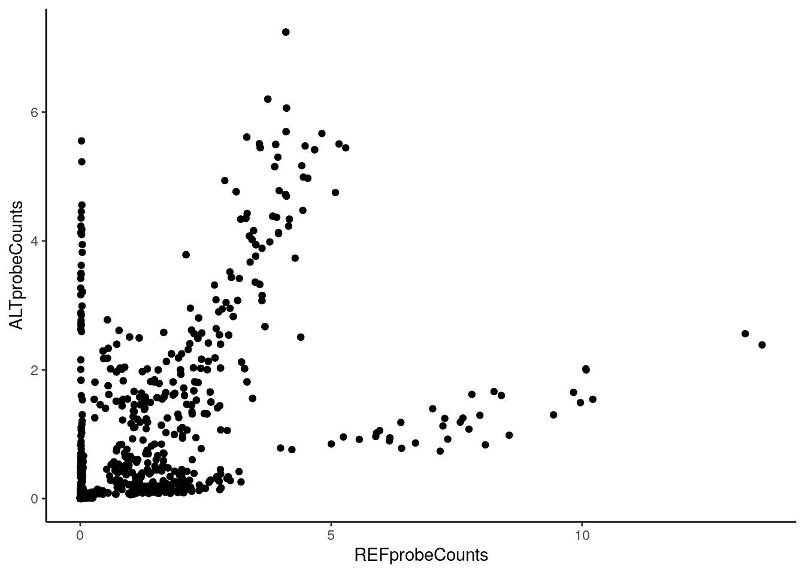
# Histogram of average read counts
exp_data %>% pivot_longer(cols = c("ALTprobeCounts", "REFprobeCounts"),
names_to = "probe", values_to = "aveCounts") %>%
ggplot(aes(x = aveCounts, fill = probe)) +
geom_histogram(binwidth = 1) +
theme_classic()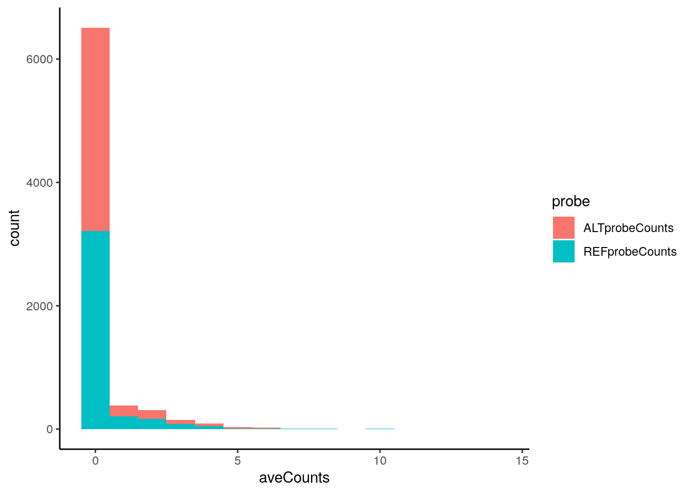
# filtering out values <1
exp_data %>% pivot_longer(cols = c("ALTprobeCounts", "REFprobeCounts"),
names_to = "probe", values_to = "aveCounts") %>%
filter(aveCounts>1) %>%
ggplot(aes(x = aveCounts, fill = probe)) +
geom_histogram(binwidth = 1) +
theme_classic()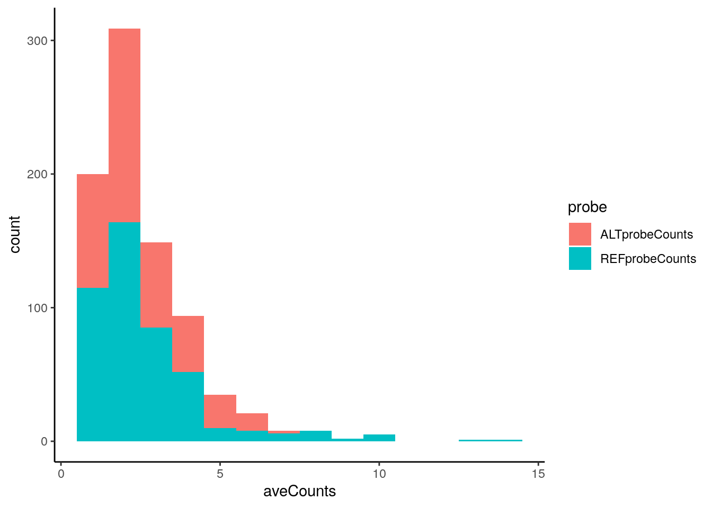
exp_data %>% pivot_longer(cols = c("ALTprobeCounts", "REFprobeCounts"),
names_to = "probe", values_to = "aveCounts") %>%
ggplot(aes(x = probe, y = log2(aveCounts), fill = probe)) +
geom_violin() +
theme_classic()Warning: Removed 49 rows containing non-finite values (`stat_ydensity()`).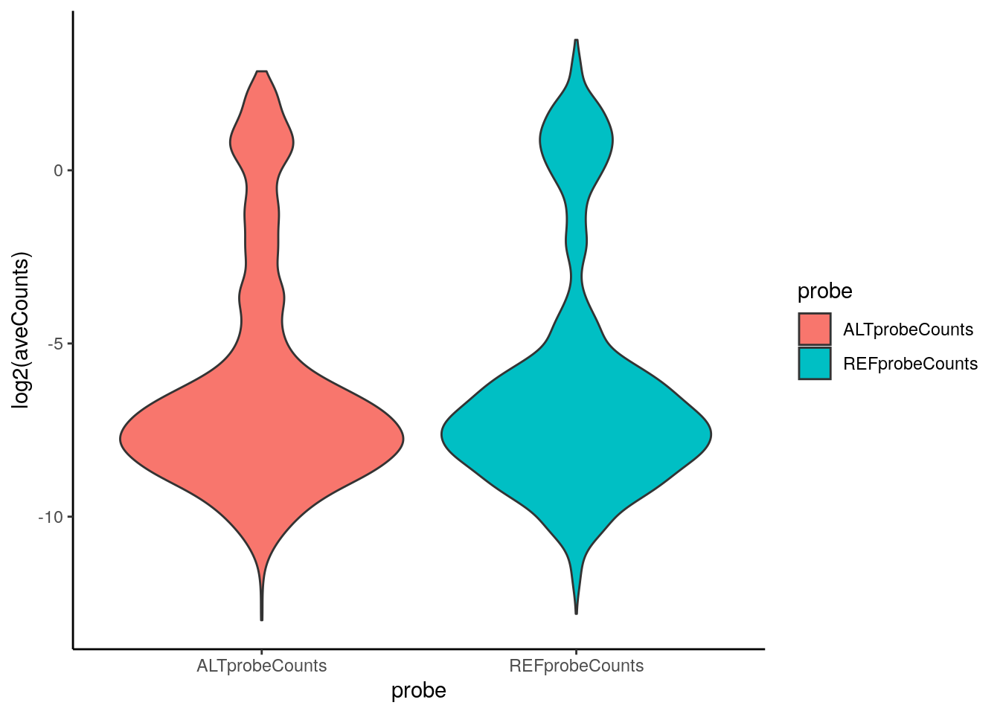
exp_data %>% mutate(ratio_alt_ref = ALTprobeCounts/REFprobeCounts) %>%
ggplot(aes(x = ratio_alt_ref)) +
geom_histogram() +
theme_classic()`stat_bin()` using `bins = 30`. Pick better value with `binwidth`.Warning: Removed 28 rows containing non-finite values (`stat_bin()`).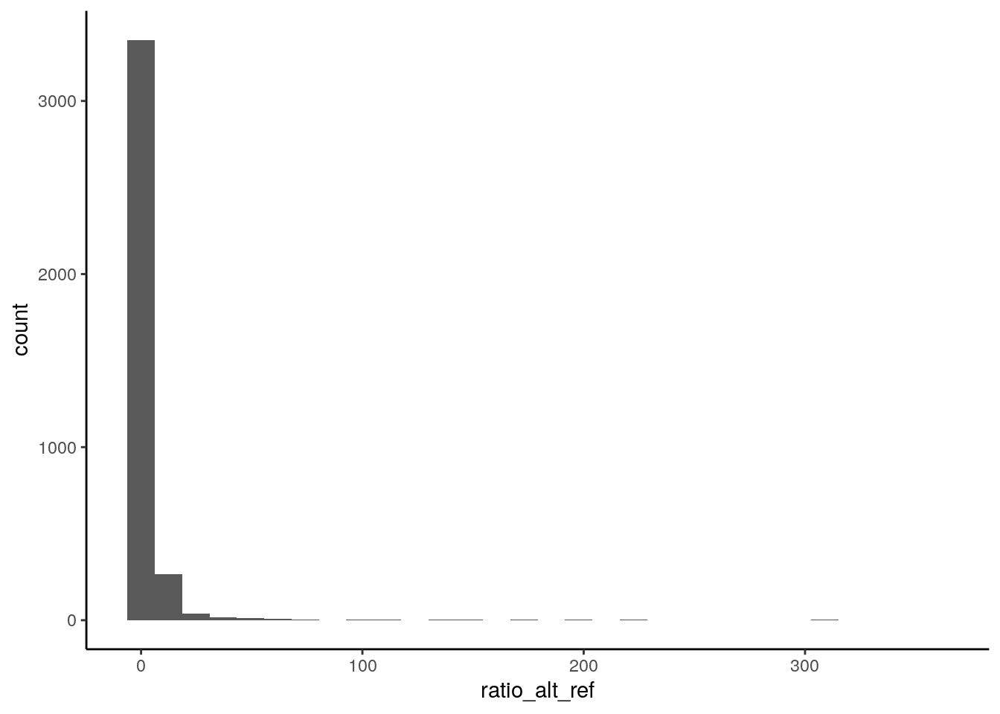
exp_data %>% mutate(ratio_alt_ref = REFprobeCounts/ALTprobeCounts) %>%
ggplot(aes(x = ratio_alt_ref)) +
geom_histogram() +
theme_classic()`stat_bin()` using `bins = 30`. Pick better value with `binwidth`.Warning: Removed 21 rows containing non-finite values (`stat_bin()`).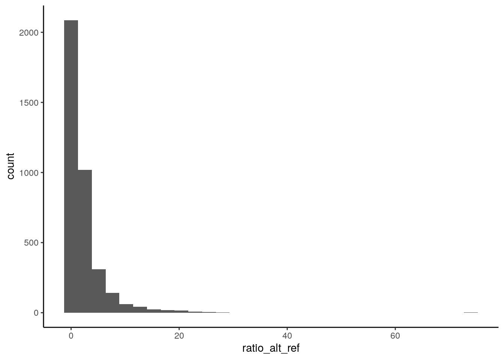
p1 <- exp_data %>% mutate(ratio_alt_ref = ALTprobeCounts/REFprobeCounts) %>%
ggplot(aes(x = ratio_alt_ref)) +
geom_histogram() +
theme_classic() +
xlim(c(0, 40)) +
ylim(c(0, 1200))
p2 <- exp_data %>% mutate(ratio_ref_alt = REFprobeCounts/ALTprobeCounts) %>%
ggplot(aes(x = ratio_ref_alt)) +
geom_histogram() +
theme_classic() +
xlim(c(0, 40)) +
ylim(c(0, 1200))
p1 + p2`stat_bin()` using `bins = 30`. Pick better value with `binwidth`.Warning: Removed 92 rows containing non-finite values (`stat_bin()`).Warning: Removed 3 rows containing missing values (`geom_bar()`).`stat_bin()` using `bins = 30`. Pick better value with `binwidth`.Warning: Removed 25 rows containing non-finite values (`stat_bin()`).
Removed 3 rows containing missing values (`geom_bar()`).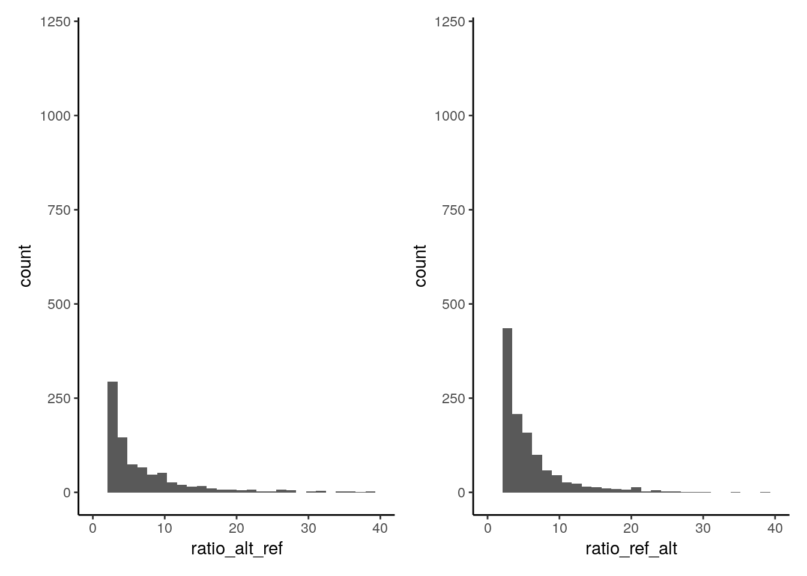
# Genotype data from ASE.rds
gt_data <- read.csv("/scratch/hnatri/ILD/ILD_spatial_ASE/gt_data.csv", row.names = "X")
#gt_data$eSNP_GT <- as.numeric(gt_data$eSNP_GT)
#gt_data$linked_SNP_GT <- as.numeric(gt_data$linked_SNP_GT)
colnames(gt_data) <- gsub("gene_body_snp", "tagSNP", colnames(gt_data))
intersect(gt_data$Sample_Name, exp_data$Sample_Name) [1] "THD0016" "THD0026" "TILD001" "TILD006" "TILD010" "TILD028"
[7] "TILD030" "TILD037" "TILD041" "TILD049" "TILD055" "TILD059"
[13] "TILD062" "TILD074" "TILD080" "TILD093" "TILD102" "TILD103"
[19] "TILD109" "TILD111" "TILD113" "TILD123" "TILD126" "TILD136"
[25] "VUHD113" "VUHD115" "VUILD102" "VUILD104" "VUILD48" "VUILD59"
[31] "VUILD78" "VUILD91" "VUILD96" intersect(gt_data$tagSNP, exp_data$tagSNP) [1] "rs10027069" "rs4693825" "rs4693826" "rs11056929" "rs11056933"
[6] "rs214908" "rs75833251" "rs230535" "rs1598858" "rs230507"
[11] "rs11202915" "rs139137711" "rs1926194" "rs9658742" "rs2488319"
[16] "rs2245844" "rs57721459" "rs1187102" "rs35726481" "rs7340881"
[21] "rs2518058" "rs3903056" "rs7575823" "rs4853532" "rs1214596"
[26] "rs1723018" "rs1187104" "rs1187101" "rs10750646" "rs12575975"
[31] "rs11645013" "rs12445247" "rs1017734" "rs1017736" "rs1187068"
[36] "rs10085877" "rs12704057" "rs17195631" "rs75045913" "rs2928672"
[41] "rs5743462" "rs2977773" "rs2293960" "rs7072966" "rs2277235"
[46] "rs3013244" "rs2619344" "rs2737017" "rs56932055" "rs10484326"
[51] "rs11252856" "rs498327" "rs8056195" "rs11864751" "rs3088162"
[56] "rs71334202" "rs1029463" "rs2696609" "rs371996525" "rs577973995"
[61] "rs558642106" "rs542050069" "rs546433642" "rs563326240" "rs569247938"
[66] "rs549599956" "rs2668670" "rs4419368" "rs34705070" "rs6772168"
[71] "rs13163344" "rs138215727" "rs7844887" "rs35318617" "rs7083234"
[76] "rs3890643" "rs75391810" "rs718874" "rs718875" "rs58888255"
[81] "rs1608" "rs7410765" "rs12171243" "rs55931899" "rs68057779"
[86] "rs12764498" "rs7608471" "rs4399765" "rs75101148" "rs58606426"
[91] "rs3934643" "rs12528271" "rs2240803" "rs9600498" "rs8192757" setdiff(gt_data$tagSNP, exp_data$tagSNP)[1] "rs28670302" "rs2978483" setdiff(exp_data$tagSNP, gt_data$tagSNP)character(0)setdiff(gt_data$Sample_Name, exp_data$Sample_Name) [1] "THD0001" "THD0002" "THD0005" "THD0006" "THD0007" "THD0008"
[7] "THD0009" "THD0010" "THD0012" "THD0014" "THD0015" "THD0017"
[13] "THD0019" "THD0020" "THD0021" "THD0022" "THD0023" "TILD015"
[19] "TILD019" "TILD039" "TILD051" "TILD060" "TILD084" "TILD116"
[25] "VUHD071" "VUHD072" "VUHD073" "VUHD077" "VUHD078" "VUHD087"
[31] "VUHD101" "VUHD103" "VUHD104" "VUHD106" "VUHD107" "VUHD108"
[37] "VUHD111" "VUHD112" "VUHD114" "VUHD117" "VUHD65" "VUHD66"
[43] "VUHD67" "VUHD68" "VUHD69" "VUHD70" "VUHD84" "VUHD85"
[49] "VUHD92" "VUHD94" "VUHD95" "VUHD98" "VUILD100" "VUILD53"
[55] "VUILD54" "VUILD55" "VUILD57" "VUILD58" "VUILD60" "VUILD61"
[61] "VUILD62" "VUILD63" "VUILD64" "VUILD65" "VUILD67" "VUILD68"
[67] "VUILD69" "VUILD73" "VUILD74" "VUILD75" "VUILD76" "VUILD77"
[73] "VUILD79" "VUILD80" "VUILD81" "VUILD82" "VUILD83" "VUILD84"
[79] "VUILD85" "VUILD86" "VUILD87" "VUILD88" "VUILD89" "VUILD90"
[85] "VUILD92" "VUILD93" "VUILD95" "VUILD97" "VUILD98" "VUILD99" setdiff(exp_data$Sample_Name, gt_data$Sample_Name)character(0)gt_data <- as.data.frame(gt_data)
exp_gt_data <- exp_data %>% full_join(gt_data, by = c("tagSNP", "Sample_Name"))summary(exp_gt_data$ALTprobeCounts) Min. 1st Qu. Median Mean 3rd Qu. Max. NA's
0.000 0.003 0.007 0.294 0.026 7.243 8796 summary(exp_gt_data$REFprobeCounts) Min. 1st Qu. Median Mean 3rd Qu. Max. NA's
0.000 0.003 0.007 0.359 0.022 13.588 8796 exp_gt_data %>% mutate(eSNP_dosage = as.character(eSNP_GT)) %>%
ggplot(aes(y = ALTprobeCounts, x = REFprobeCounts, color = eSNP_dosage)) +
geom_point() +
theme_classic()Warning: Removed 8796 rows containing missing values (`geom_point()`).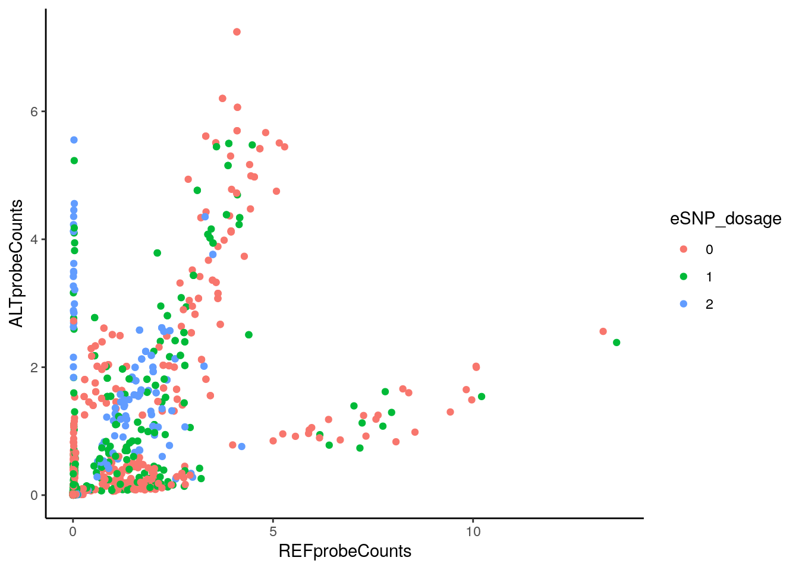
exp_gt_data %>% mutate(eSNP_dosage = as.character(eSNP_GT)) %>%
ggplot(aes(y = log(ALTprobeCounts), x = log(REFprobeCounts), color = eSNP_dosage)) +
geom_point() +
theme_classic()Warning: Removed 8796 rows containing missing values (`geom_point()`).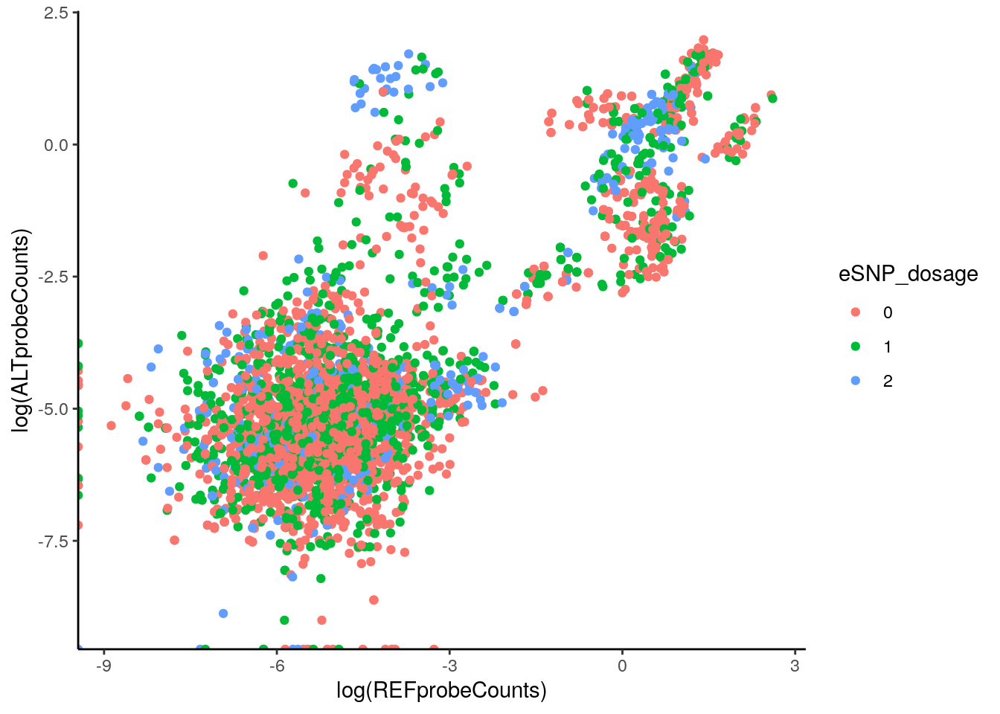
exp_gt_data %>% pivot_longer(cols = c("ALTprobeCounts", "REFprobeCounts"),
names_to = "which_probe", values_to = "aveCounts") %>%
mutate(eSNP_dosage = as.character(eSNP_GT)) %>% #dplyr::select(aveCounts) %>% unique()
ggplot(aes(y = log(aveCounts), x = which_probe, fill = which_probe)) +
geom_violin(position = position_dodge(width = 0.9)) +
#geom_point(position = position_jitterdodge(seed = 1, dodge.width = 0.9)) +
theme_classic() +
xlab("eSNP gt") +
ylab("Average log(CPM)")Warning: Removed 17641 rows containing non-finite values (`stat_ydensity()`).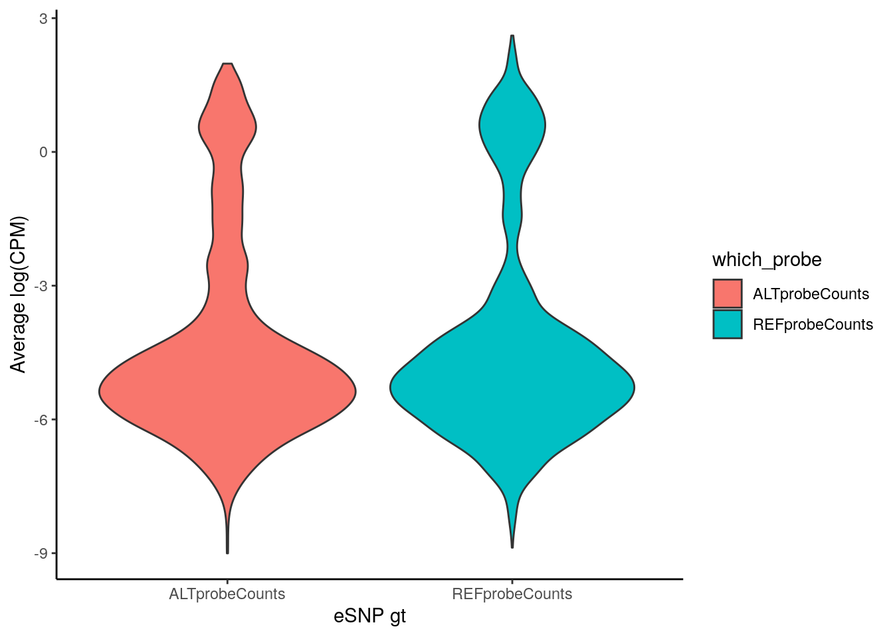
exp_gt_data %>% pivot_longer(cols = c("ALTprobeCounts", "REFprobeCounts"),
names_to = "which_probe", values_to = "aveCounts") %>%
mutate(eSNP_dosage = as.character(eSNP_GT)) %>% #dplyr::select(aveCounts) %>% unique()
ggplot(aes(y = log(aveCounts), x = eSNP_dosage, fill = which_probe)) +
geom_violin(position = position_dodge(width = 0.9)) +
#geom_point(position = position_jitterdodge(seed = 1, dodge.width = 0.9)) +
theme_classic() +
xlab("eSNP gt") +
ylab("Average log(CPM)")Warning: Removed 17641 rows containing non-finite values (`stat_ydensity()`).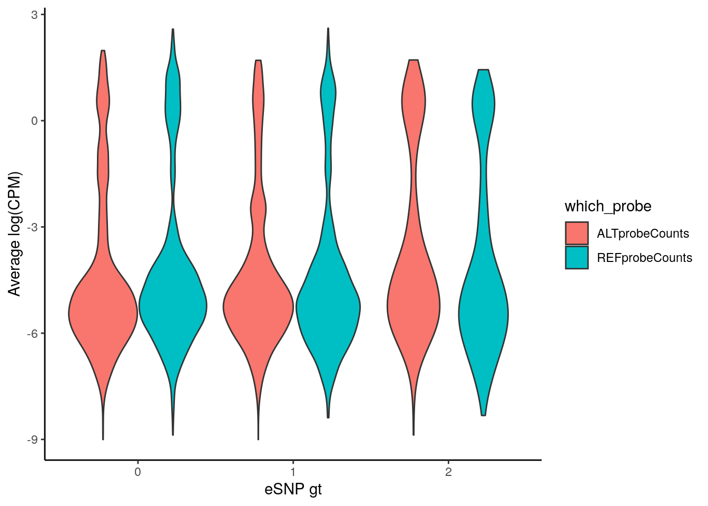
exp_gt_data %>% filter(ALTprobeCounts > REFprobeCounts) %>% pivot_longer(cols = c("ALTprobeCounts", "REFprobeCounts"),
names_to = "which_probe", values_to = "aveCounts") %>%
mutate(eSNP_dosage = as.character(eSNP_GT)) %>% #dplyr::select(aveCounts) %>% unique()
ggplot(aes(y = log(aveCounts), x = eSNP_dosage, fill = which_probe)) +
geom_violin(position = position_dodge(width = 0.9)) +
#geom_point(position = position_jitterdodge(seed = 1, dodge.width = 0.9)) +
theme_classic() +
xlab("eSNP gt") +
ylab("Average log(counts)") +
ggtitle("Samples/loci where ALTprobeCounts > REFprobeCounts")Warning: Removed 27 rows containing non-finite values (`stat_ydensity()`).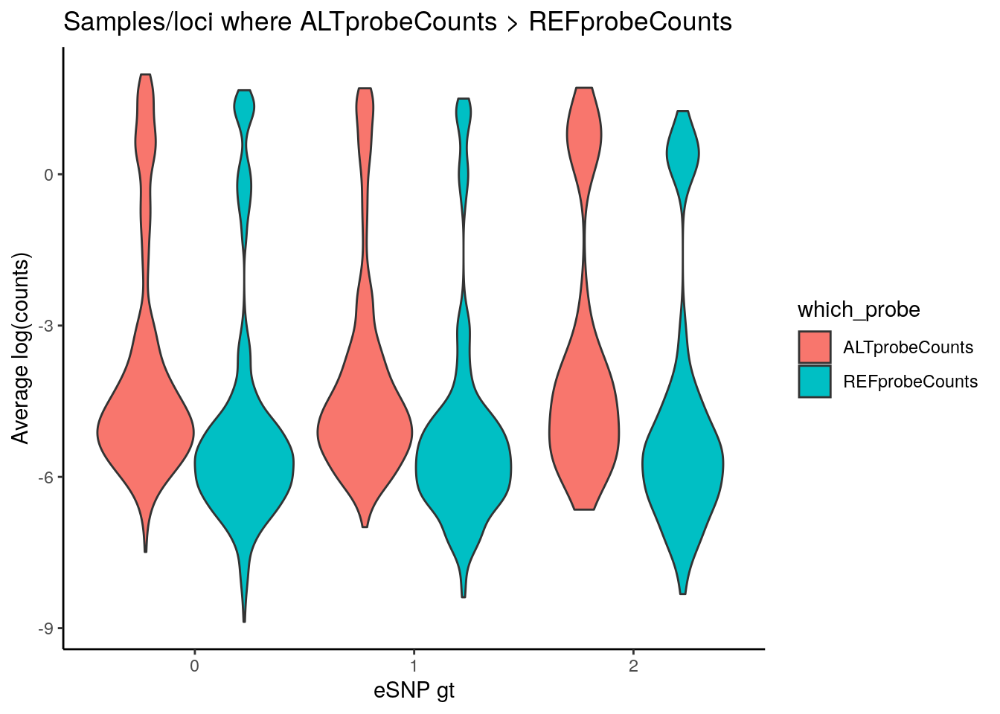
exp_gt_data %>% filter(REFprobeCounts > ALTprobeCounts) %>% pivot_longer(cols = c("ALTprobeCounts", "REFprobeCounts"),
names_to = "which_probe", values_to = "aveCounts") %>%
mutate(eSNP_dosage = as.character(eSNP_GT)) %>% #dplyr::select(aveCounts) %>% unique()
ggplot(aes(y = log(aveCounts), x = eSNP_dosage, fill = which_probe)) +
geom_violin(position = position_dodge(width = 0.9)) +
#geom_point(position = position_jitterdodge(seed = 1, dodge.width = 0.9)) +
theme_classic() +
xlab("eSNP gt") +
ylab("Average log(counts)") +
ggtitle("Samples/loci where REFprobeCounts > ALTprobeCounts")Warning: Removed 20 rows containing non-finite values (`stat_ydensity()`).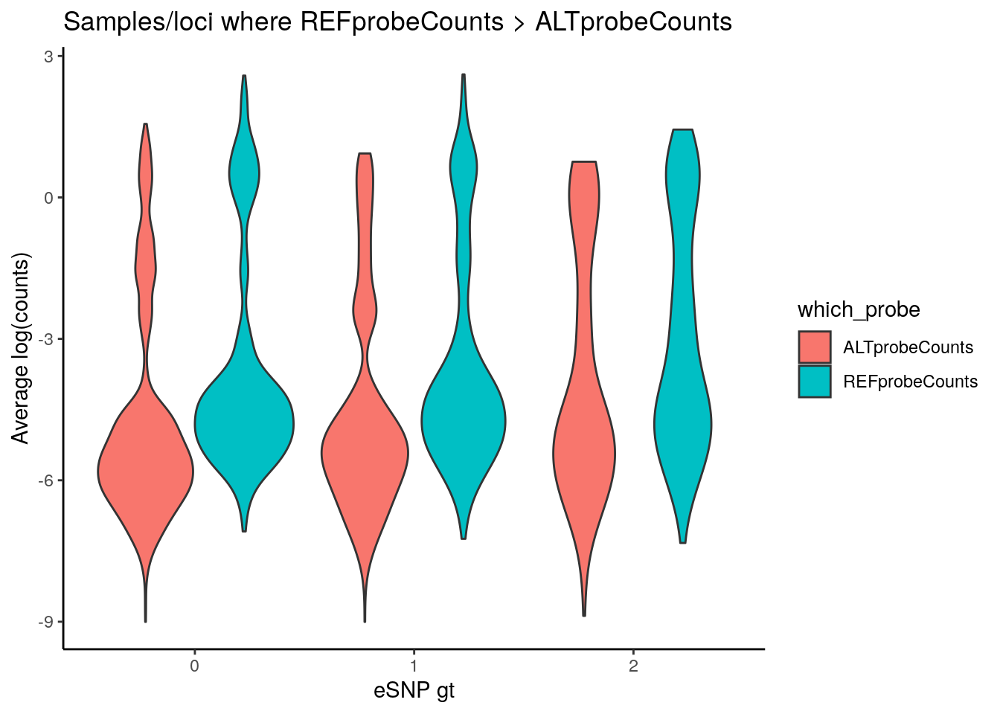
exp_gt_data %>% mutate(eSNP_dosage = as.character(eSNP_GT)) %>%
ggplot(aes(y = ALTprobeCounts, x = REFprobeCounts, color = eSNP_dosage)) +
geom_point() +
theme_classic()Warning: Removed 8796 rows containing missing values (`geom_point()`).# Probes with samples with high ALT counts and zero REF counts
exp_gt_data %>% mutate(eSNP_dosage = as.character(eSNP_GT)) %>%
ggplot(aes(y = ALTprobeCounts, x = REFprobeCounts, color = eSNP_dosage)) +
geom_point() +
theme_classic() +
geom_vline(xintercept = 0.2) +
geom_hline(yintercept = 1.8)Warning: Removed 8796 rows containing missing values (`geom_point()`).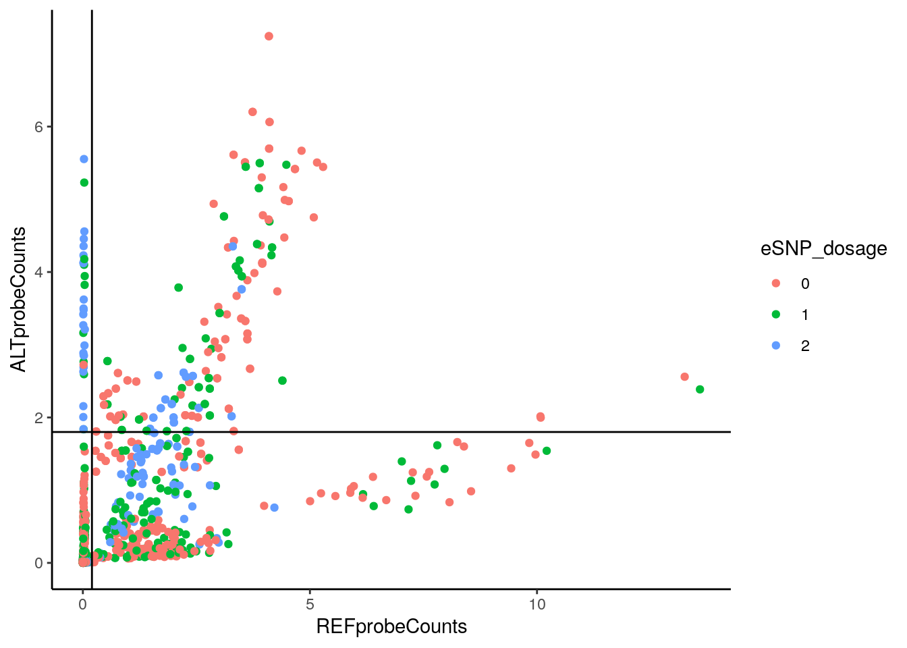
exp_gt_data %>% mutate(eSNP_dosage = as.character(eSNP_GT)) %>%
filter(REFprobeCounts < 0.2,
ALTprobeCounts > 1.8) %>%
dplyr::select(c("gene.x", "tagSNP", "eSNP", "Sample_Name", "probe")) %>%
distinct() gene.x tagSNP eSNP Sample_Name probe
1 SPARCL1 rs10027069 rs1049544 TILD001 SPARCL1-4-87503683-T
2 STAT1 rs4853532 rs1400657 THD0016 STAT1-2-190971945-T
3 STAT1 rs4853532 rs1400657 THD0026 STAT1-2-190971945-T
4 STAT1 rs4853532 rs1400657 TILD001 STAT1-2-190971945-T
5 STAT1 rs4853532 rs1400657 TILD006 STAT1-2-190971945-T
6 STAT1 rs4853532 rs1400657 TILD010 STAT1-2-190971945-T
7 STAT1 rs4853532 rs1400657 TILD028 STAT1-2-190971945-T
8 STAT1 rs4853532 rs1400657 TILD030 STAT1-2-190971945-T
9 STAT1 rs4853532 rs1400657 TILD037 STAT1-2-190971945-T
10 STAT1 rs4853532 rs1400657 TILD041 STAT1-2-190971945-T
11 STAT1 rs4853532 rs1400657 TILD049 STAT1-2-190971945-T
12 STAT1 rs4853532 rs1400657 TILD055 STAT1-2-190971945-T
13 STAT1 rs4853532 rs1400657 TILD059 STAT1-2-190971945-T
14 STAT1 rs4853532 rs1400657 TILD062 STAT1-2-190971945-T
15 STAT1 rs4853532 rs1400657 TILD074 STAT1-2-190971945-T
16 STAT1 rs4853532 rs1400657 TILD080 STAT1-2-190971945-T
17 STAT1 rs4853532 rs1400657 TILD093 STAT1-2-190971945-T
18 STAT1 rs4853532 rs1400657 TILD103 STAT1-2-190971945-T
19 STAT1 rs4853532 rs1400657 TILD109 STAT1-2-190971945-T
20 STAT1 rs4853532 rs1400657 TILD111 STAT1-2-190971945-T
21 STAT1 rs4853532 rs1400657 TILD113 STAT1-2-190971945-T
22 STAT1 rs4853532 rs1400657 TILD123 STAT1-2-190971945-T
23 STAT1 rs4853532 rs1400657 TILD126 STAT1-2-190971945-T
24 STAT1 rs4853532 rs1400657 TILD136 STAT1-2-190971945-T
25 STAT1 rs4853532 rs1400657 VUHD113 STAT1-2-190971945-T
26 STAT1 rs4853532 rs1400657 VUHD115 STAT1-2-190971945-T
27 STAT1 rs4853532 rs1400657 VUILD102 STAT1-2-190971945-T
28 STAT1 rs4853532 rs1400657 VUILD104 STAT1-2-190971945-T
29 STAT1 rs4853532 rs1400657 VUILD48 STAT1-2-190971945-T
30 STAT1 rs4853532 rs1400657 VUILD59 STAT1-2-190971945-T
31 STAT1 rs4853532 rs1400657 VUILD78 STAT1-2-190971945-T
32 STAT1 rs4853532 rs1400657 VUILD91 STAT1-2-190971945-T
33 STAT1 rs4853532 rs1400657 VUILD96 STAT1-2-190971945-T# Plotting STAT1
exp_gt_data %>% mutate(eSNP_dosage = as.character(eSNP_GT)) %>%
filter(gene.x == "STAT1",
eSNP == "rs1400657") %>%
ggplot(aes(x = eSNP_dosage, y = ALTprobeCounts/REFprobeCounts, color = eSNP_dosage)) +
geom_violin() +
theme_classic()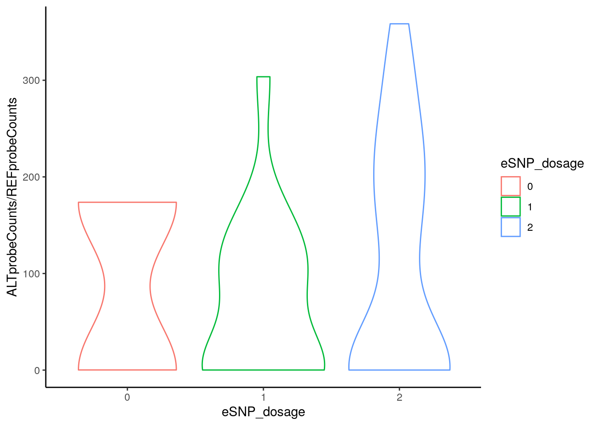
exp_gt_data %>% mutate(eSNP_dosage = as.character(eSNP_GT)) %>%
filter(gene.x == "STAT1",
eSNP == "rs1400657") %>%
ggplot(aes(y = ALTprobeCounts, x = REFprobeCounts, color = eSNP_dosage)) +
geom_point() +
theme_classic()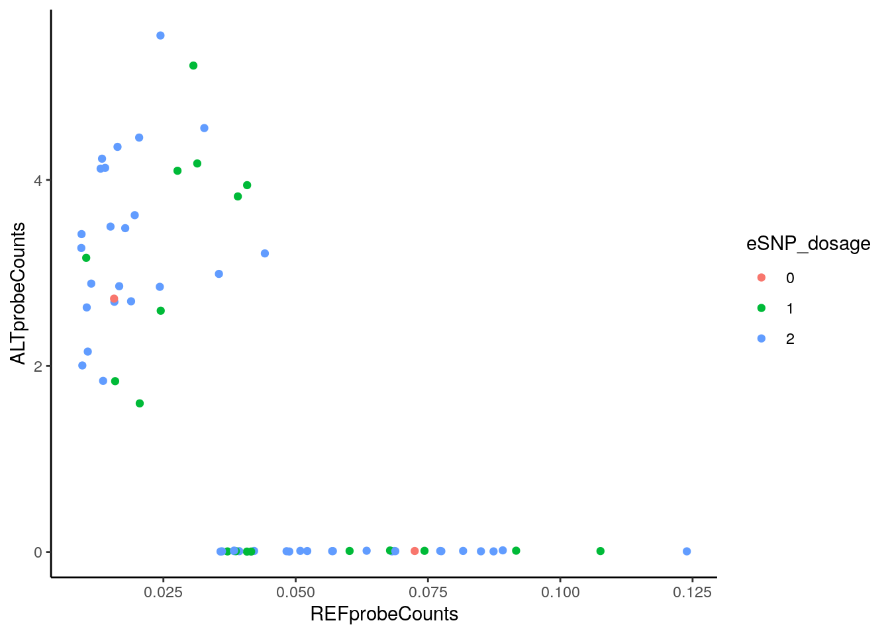
sessionInfo()R version 4.3.0 (2023-04-21)
Platform: x86_64-pc-linux-gnu (64-bit)
Running under: Ubuntu 22.04.3 LTS
Matrix products: default
BLAS: /usr/lib/x86_64-linux-gnu/openblas-pthread/libblas.so.3
LAPACK: /usr/lib/x86_64-linux-gnu/openblas-pthread/libopenblasp-r0.3.20.so; LAPACK version 3.10.0
locale:
[1] LC_CTYPE=en_US.UTF-8 LC_NUMERIC=C
[3] LC_TIME=en_US.UTF-8 LC_COLLATE=en_US.UTF-8
[5] LC_MONETARY=en_US.UTF-8 LC_MESSAGES=en_US.UTF-8
[7] LC_PAPER=en_US.UTF-8 LC_NAME=C
[9] LC_ADDRESS=C LC_TELEPHONE=C
[11] LC_MEASUREMENT=en_US.UTF-8 LC_IDENTIFICATION=C
time zone: Etc/UTC
tzcode source: system (glibc)
attached base packages:
[1] grid stats4 stats graphics grDevices utils datasets
[8] methods base
other attached packages:
[1] ComplexHeatmap_2.18.0 RColorBrewer_1.1-3
[3] viridis_0.6.3 viridisLite_0.4.2
[5] ggthemes_4.2.4 VariantAnnotation_1.48.1
[7] Rsamtools_2.18.0 Biostrings_2.70.2
[9] XVector_0.42.0 SummarizedExperiment_1.32.0
[11] Biobase_2.62.0 GenomicRanges_1.54.1
[13] GenomeInfoDb_1.38.7 IRanges_2.36.0
[15] S4Vectors_0.40.2 MatrixGenerics_1.14.0
[17] matrixStats_1.0.0 BiocGenerics_0.48.1
[19] googlesheets4_1.1.0 workflowr_1.7.1
[21] ggrepel_0.9.3 ggpubr_0.6.0
[23] plyr_1.8.8 lubridate_1.9.2
[25] forcats_1.0.0 stringr_1.5.0
[27] dplyr_1.1.2 purrr_1.0.2
[29] readr_2.1.4 tidyr_1.3.0
[31] tibble_3.2.1 ggplot2_3.4.2
[33] tidyverse_2.0.0 SeuratDisk_0.0.0.9021
[35] Seurat_5.0.1 SeuratObject_5.0.1
[37] sp_1.6-1 cli_3.6.1
loaded via a namespace (and not attached):
[1] fs_1.6.2 spatstat.sparse_3.0-1 bitops_1.0-7
[4] doParallel_1.0.17 httr_1.4.6 tools_4.3.0
[7] sctransform_0.4.1 backports_1.4.1 utf8_1.2.3
[10] R6_2.5.1 lazyeval_0.2.2 uwot_0.1.14
[13] GetoptLong_1.0.5 withr_2.5.0 prettyunits_1.1.1
[16] gridExtra_2.3 progressr_0.13.0 spatstat.explore_3.2-1
[19] fastDummies_1.7.3 labeling_0.4.2 sass_0.4.6
[22] spatstat.data_3.0-1 ggridges_0.5.4 pbapply_1.7-0
[25] parallelly_1.36.0 BSgenome_1.70.1 rstudioapi_0.14
[28] RSQLite_2.3.1 shape_1.4.6 generics_0.1.3
[31] BiocIO_1.12.0 ica_1.0-3 spatstat.random_3.1-5
[34] car_3.1-2 Matrix_1.6-5 fansi_1.0.4
[37] abind_1.4-5 lifecycle_1.0.3 whisker_0.4.1
[40] yaml_2.3.7 carData_3.0-5 SparseArray_1.2.4
[43] BiocFileCache_2.10.1 Rtsne_0.16 blob_1.2.4
[46] promises_1.2.0.1 crayon_1.5.2 miniUI_0.1.1.1
[49] lattice_0.21-8 cowplot_1.1.1 GenomicFeatures_1.54.3
[52] KEGGREST_1.42.0 pillar_1.9.0 knitr_1.43
[55] rjson_0.2.21 future.apply_1.11.0 codetools_0.2-19
[58] leiden_0.4.3 glue_1.6.2 getPass_0.2-4
[61] data.table_1.14.8 vctrs_0.6.5 png_0.1-8
[64] spam_2.9-1 cellranger_1.1.0 gtable_0.3.3
[67] cachem_1.0.8 xfun_0.39 S4Arrays_1.2.1
[70] mime_0.12 survival_3.5-5 gargle_1.4.0
[73] iterators_1.0.14 ellipsis_0.3.2 fitdistrplus_1.1-11
[76] ROCR_1.0-11 nlme_3.1-162 bit64_4.0.5
[79] progress_1.2.2 filelock_1.0.2 RcppAnnoy_0.0.20
[82] rprojroot_2.0.3 bslib_0.4.2 irlba_2.3.5.1
[85] KernSmooth_2.23-21 colorspace_2.1-0 DBI_1.1.3
[88] tidyselect_1.2.0 processx_3.8.1 bit_4.0.5
[91] compiler_4.3.0 curl_5.0.1 git2r_0.32.0
[94] hdf5r_1.3.8 xml2_1.3.4 DelayedArray_0.28.0
[97] plotly_4.10.2 rtracklayer_1.62.0 scales_1.2.1
[100] lmtest_0.9-40 callr_3.7.3 rappdirs_0.3.3
[103] digest_0.6.31 goftest_1.2-3 spatstat.utils_3.0-3
[106] rmarkdown_2.22 htmltools_0.5.5 pkgconfig_2.0.3
[109] highr_0.10 dbplyr_2.3.2 fastmap_1.1.1
[112] GlobalOptions_0.1.2 rlang_1.1.1 htmlwidgets_1.6.2
[115] shiny_1.7.4 farver_2.1.1 jquerylib_0.1.4
[118] zoo_1.8-12 jsonlite_1.8.5 BiocParallel_1.36.0
[121] RCurl_1.98-1.12 magrittr_2.0.3 GenomeInfoDbData_1.2.11
[124] dotCall64_1.0-2 patchwork_1.1.2 munsell_0.5.0
[127] Rcpp_1.0.10 reticulate_1.29 stringi_1.7.12
[130] zlibbioc_1.48.0 MASS_7.3-60 parallel_4.3.0
[133] listenv_0.9.0 deldir_1.0-9 splines_4.3.0
[136] tensor_1.5 circlize_0.4.15 hms_1.1.3
[139] ps_1.7.5 igraph_1.4.3 spatstat.geom_3.2-1
[142] ggsignif_0.6.4 RcppHNSW_0.5.0 reshape2_1.4.4
[145] biomaRt_2.58.2 XML_3.99-0.14 evaluate_0.21
[148] foreach_1.5.2 tzdb_0.4.0 httpuv_1.6.11
[151] RANN_2.6.1 polyclip_1.10-4 clue_0.3-64
[154] future_1.32.0 scattermore_1.2 broom_1.0.4
[157] xtable_1.8-4 restfulr_0.0.15 RSpectra_0.16-1
[160] rstatix_0.7.2 later_1.3.1 googledrive_2.1.0
[163] GenomicAlignments_1.38.2 memoise_2.0.1 AnnotationDbi_1.64.1
[166] cluster_2.1.4 timechange_0.2.0 globals_0.16.2